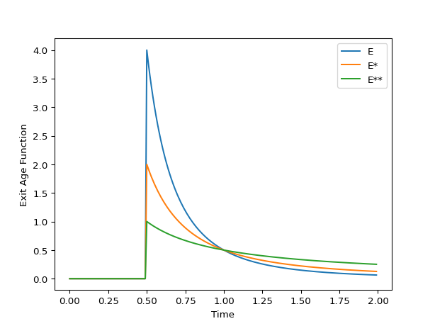

Convection¶
Pure Convection Model
-
class
rtdpy.convection.Convection(tau, dt, time_end)[source]¶ Bases:
rtdpy.rtd.RTDCreate pure convection model for laminar flow in a pipe. [1]
The true RTD curve is given by \(E(t)\) for a flux-based introduction of material and a flux-based measurment. If only one of introduction or measurement is planar, then the apparent RTD is given by \(E^*(t)\). If both introduction and measurement are planar, then the apparent RTD is given by \(E^{**}(t)\).
\[\begin{split}\begin{align*} E(t) &= \frac{\tau^2}{2t^3} & \text{for } t\geq\frac{\tau}{2}\\ E^*(t) &= \frac{\tau}{2t^2} & \text{for } t\geq\frac{\tau}{2}\\ E^{**}(t) &= \frac{\tau}{2t} & \text{for } t\geq\frac{\tau}{2} \end{align*}\end{split}\]\(E(t)\) is Convection.exitage
\(E^*(t)\) is Convection.exitage_star
\(E^{**}(t)\) is Convection.exitage_star2
- Parameters
- tauscalar
Mean residence time of true RTD.
- dtscalar
Time step for RTD.
dt>0- time_endscalar
End time for RTD.
time_end>0
References
- 1
Levenspiel O. (1999) “Chemical Reaction Engineering: Third Edition” John Wiley & Sons, Inc.
Examples
>>> import matplotlib.pyplot as plt >>> import rtdpy >>> a = rtdpy.Convection(tau=1, dt=.01, time_end=2) >>> plt.plot(a.time, a.exitage, label='E') >>> plt.plot(a.time, a.exitage_star, label='E*') >>> plt.plot(a.time, a.exitage_star2, label='E**') >>> plt.xlabel('Time') >>> plt.ylabel('Exit Age Function') >>> plt.legend() >>> plt.show()
-
property
dt¶ Time step for RTD
-
property
exitage¶ Exit age distribution for RTD
-
property
exitage_norm¶ Normalized Exit Age Distribtion for RTD
-
property
exitage_star¶ Planar-Flux or Flux-Planar exitage.
-
property
exitage_star2¶ Planar-Planar exitage.
-
frequencyresponse(omegas)¶ - Parameters
- omegasndarray
frequencies at which to evaluate magnitude response
- Returns
- magnitudendarray
frequency magnitude response at omegas
-
funnelplot(times, disturbances)¶ Return maximum output signal due to square disturbances.
Uses method from [Garcia] . Also returns meshgrid for times and disturbance inputs for ease of plotting.
- Parameters
- timesarray_like, size m
Times to determine funnelplot
- disturbancesarray_like, size n
Disturbance magnitudes
- Returns
- x2D meshgrid size (mxn)
times
- y2D meshgrid size (mxn)
disturbances
- response2D meshgrid size (mxn)
maximum response at (x,y)
References
- Garcia
Garcia-Munoz S., Butterbaugh A., Leavesley I., Manley L.F., Slade D., Bermingham S. (2018) A flowhseet model for the development of a continuous process for pharmaceutical tablets: An industrial perspective. “AIChE Journal”, 64(2), 511-525.
-
integral()¶ Integral of RTD.
-
mrt()¶ Mean residence time of RTD.
-
output(inputtime, inputsignal)¶ Convolves input signal with RTD
- Parameters
- inputtimendarray
Times of input signal, which must have same dt as RTD. Size m
- inputsignalndarray
Input signal. Size n
- Returns
- outputsignalndarrary
Output signal at same dt. Size m + n -1
-
sigma()¶ Variance of RTD.
-
property
stepresponse¶ Step respose of RTD
-
property
stepresponse_norm¶ Normalized step respose of RTD
-
property
tau¶ Mean Residence Time of all tanks combined.
-
property
time¶ Time points for exitage function.
-
property
time_end¶ Last time point for RTD